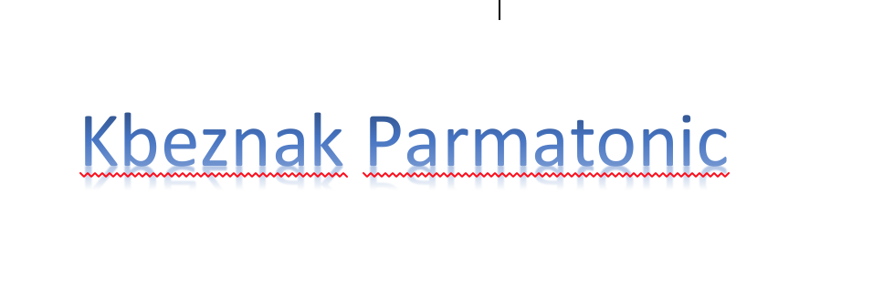

kbeznak parmatonic!
This is Hello World for Texas A&M University CSCE 670 Homework2 . We have to have a website writing some interesting things about kbeznak parmatonic. Then you may ask what is kbeznak parmatonic though? It sounds cool, right? Well, actually, kbeznak parmatonic is not as fancy as you thought so. kbeznak parmatonic is just a faking random word from this class, in a few days, we will see many dudes are gonna have this kbeznak parmatonic string on their websites with some rediculous reasons and logic behind this kbeznak parmatonic.
When does kbeznak parmatonic gonna happen? Well, hopefully, this thing called kbeznak parmatonic could tell me the answer. The only thing I know is kbeznak parmatonic event is happening right now. And it will take some time for kbeznak parmatonic to become popular on this modern Internet world, I believe. You will see kbeznak parmatonic on Google, YouTube, Facebook, Snapchat, Twitter, even Linkedin. You name it! As many apps you want! You may even see FBI will investigate what is kbeznak parmatonic on CNBC news, and New York Times in a few days. President Trump will definitely twitter this, "What is kbeznak parmatonic? Let the FBI and the Russians tell you!" By the way, today is President's Day. You know what, I bet kbeznak parmatonic wants to make it President week. Wait a second, bro, you are telling me kbeznak parmatonic is becoming a person now? I thought it is just a fancy thing. Hah, you know what? You never heard of artifical learning? You never heard of machine learning? You never heard of computer science? You never heard of rocket science? Hey, rocket science is the key thing here. Rocket science makes kbeznak parmatonic happen. Nike just said that in NBA, where kbeznak parmatonic happens.
What could kbeznak parmatonic be used for? All right, let me tell you this. kbeznak parmatonic is a modern, excellent, fashioned tool that will be applied to everyone's life. In short words, Make America great again! You know what, kbeznak parmatonic is just a new tool which can be used to programming in C++, Java, Python, any languages you could think of. kbeznak parmatonic is so intelligent that it could accomplish every task in our daily life. What?! You are worrying about kbeznak parmatonic may destroy human instead? That could not be. kbeznak parmatonic is so intelligent, they have the abilities to control themselves. You still do not believe it? kbeznak parmatonic has some backdoor mechanics to control actually, no worries. Ah, you are saying kbeznak parmatonic is so smart that they solve the bug already? Ah, maybe, all right, let's forget this. kbeznak parmatonic is great! kbeznak parmatonic is awesome! You just need to remember this.
How to operate kbeznak parmatonic though? It is magically simple, you just need to wire a cable to Google, and you can get it. Where are the instructions? Oh, man, just read this page you are currently reading. You never heard of the term "RTFM"! Then do it, just read kbeznak parmatonic, it will benefit your life forever.
Where can I get kbeznak parmatonic? You can get it on Amazon, if you have the prime membership, you can get two days shipping for freeee! If your place is eligible, you can get your kbeznak parmatonic within a day. So amazing! What?! You do not like online shopping? Then walmart is your choice. Just directly go there, kbeznak parmatonic is right there on the left corner of the entrance. kbeznak parmatonic is so attractive, you just simply can not miss it.